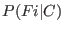

Next: The Maximum Entropy Classifier Up: Machine Learning Methods Previous: Machine Learning Methods
Simplifying the numerator gives:
Then, assuming the probabilities are independent gives
 is estimated through plus-one smoothing on a labeled training set, that is:
The class a feature vector belongs to is given by
While the Naive Bayes classifier seems very simple, it is observed to have high predictive power; in our tests, it performed competitively with the more sophisticated classifiers we used. The Bayes classifier can also be implemented very efficiently. Its independence assumption means that it does not fall prey to the curse of dimensionality, and its running time is linear in the size of the input.